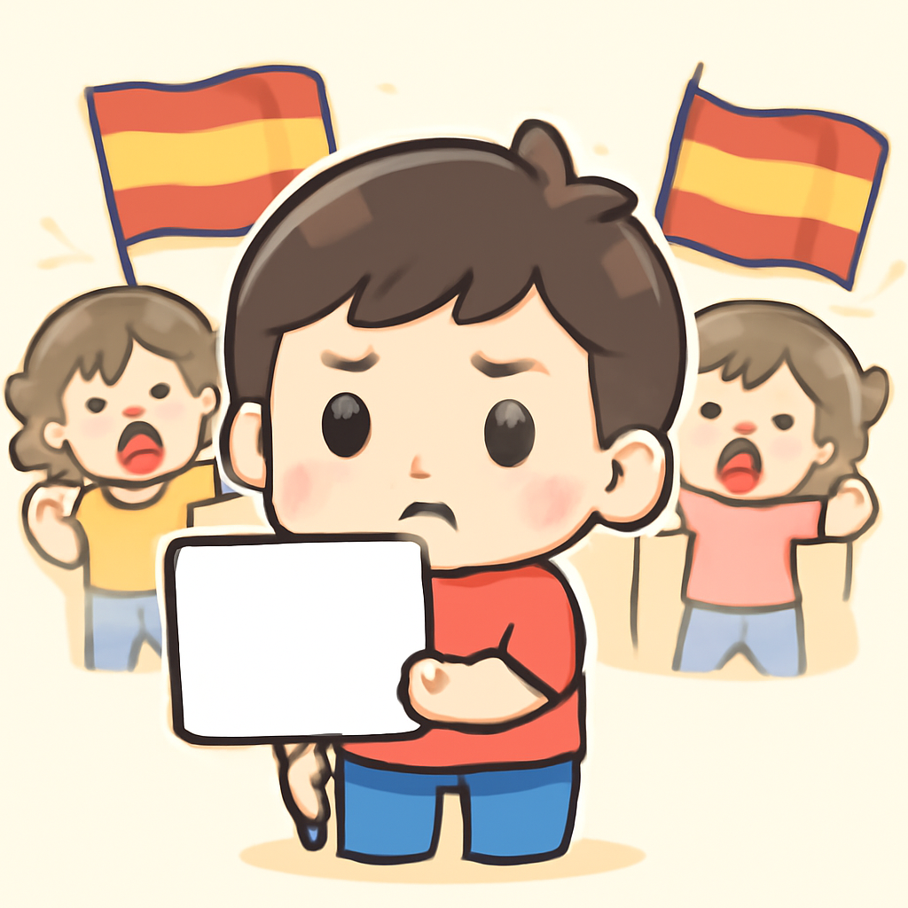
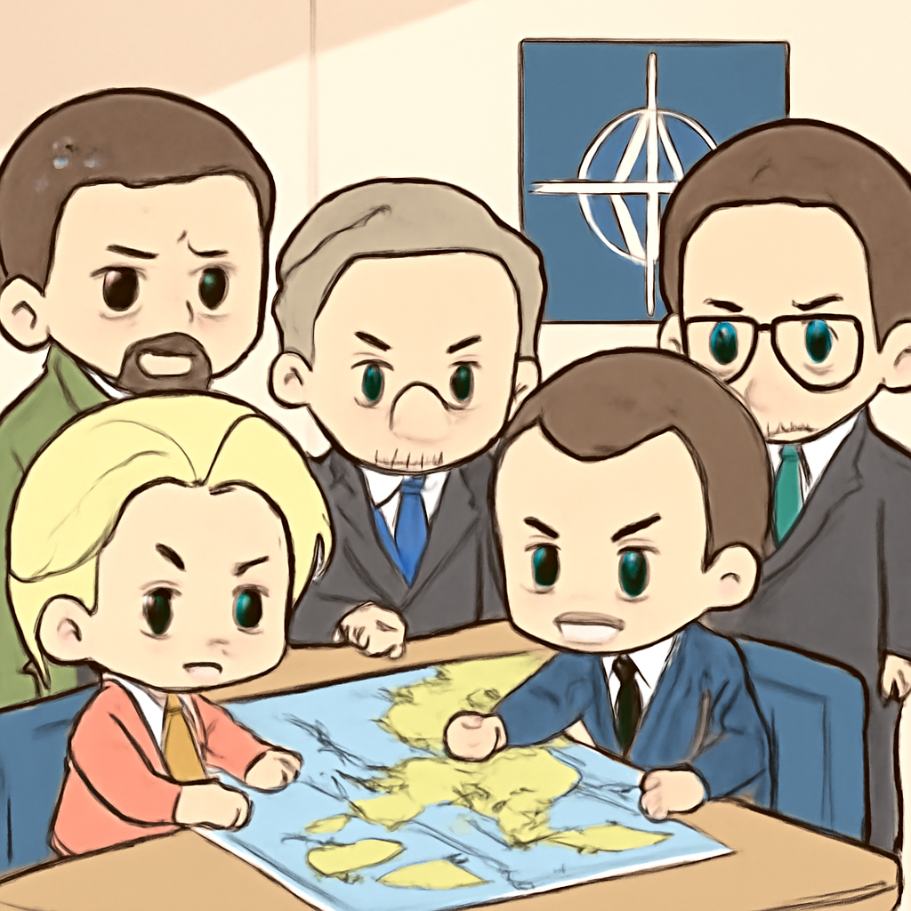
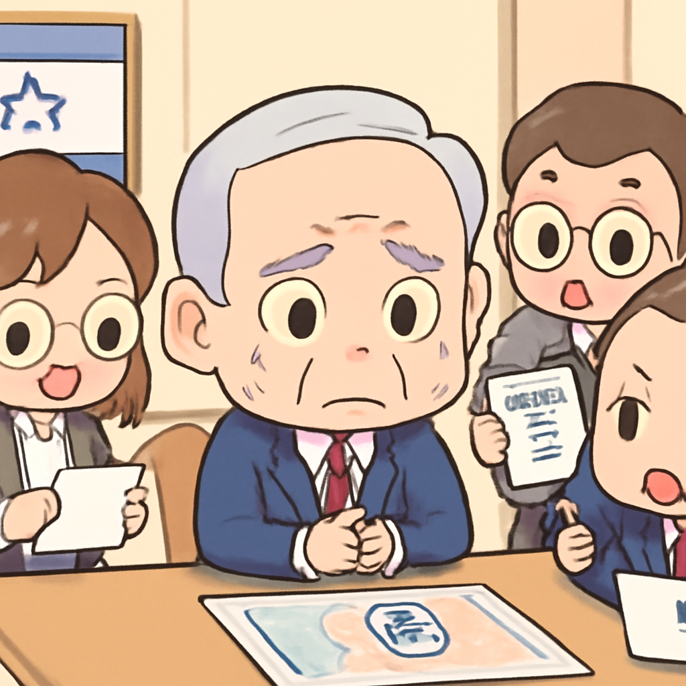

其一 · 沙烏地阿拉伯 · 伊朗襲擊油輪致兩名菲律賓水手喪生
沙烏地阿拉伯油輪在霍爾木茲海峽遭襲擊，兩名菲律賓水手不幸遇難。
在沙烏地阿拉伯霍爾木茲海峽，一艘名為Sidr的油輪本週一遭到不明飛行物襲擊，導致兩名菲律賓水手喪生。沙國對此表示譴責，並強調這一事件可能會加劇區域緊張局勢，影響全球能源供應。這可不是電影情節，真實的水手生活還是有點危險。
🔗 原始新聞 ↗
2026-09-03 · 以古觀今，以笑抗愁
沙烏地阿拉伯油輪在霍爾木茲海峽遭襲擊，兩名菲律賓水手不幸遇難。
在沙烏地阿拉伯霍爾木茲海峽，一艘名為Sidr的油輪本週一遭到不明飛行物襲擊，導致兩名菲律賓水手喪生。沙國對此表示譴責，並強調這一事件可能會加劇區域緊張局勢，影響全球能源供應。這可不是電影情節，真實的水手生活還是有點危險。
🔗 原始新聞 ↗
西班牙在幾內亞海岸的移民危機引發民眾抗議。

在西班牙幾內亞海岸，民眾對政府處理移民危機的不滿情緒在本週四爆發。反對派指責首相佩德羅·桑切斯拋棄了當地居民，讓他們面對日益嚴重的移民潮。這場抗議不僅是對政策的挑戰，也是對社會的考驗，讓人不禁想起當年那些「我不是在叫你」的爭論。
🔗 原始新聞 ↗
德國指控俄羅斯對萊比錫機場的無人機襲擊負有責任。

在德國，隨著對俄羅斯日益增長的指控，歐盟和北約決定加大對俄壓力。德國政府指責俄國對萊比錫機場發動無人機攻擊，這不僅影響了航運，還可能導致更大範圍的衝突。看來這場「玩具飛行器」的戰爭，大家都不想錯過。
🔗 原始新聞 ↗
荷蘭中央銀行因地緣政治不穩而轉移黃金儲備。
荷蘭中央銀行最近將數十億美元的黃金儲備從美國和加拿大轉移到倫敦，理由是「地緣政治不穩定性增加」。這個動作可不是因為荷蘭想要在倫敦開一家金店，而是為了應對可能的經濟波動。這筆金額可真是讓人眼花撩亂！
🔗 原始新聞 ↗
以色列總理內塔尼亞胡或因選舉面臨安全危機。

以色列總理內塔尼亞胡在面對艱困的選舉形勢時，似乎在尋找各種可能的安全危機來鞏固自己的地位。這樣的行為引發了廣泛的質疑，讓人不禁想問，政治和安全到底有多大的關係？不過，這可不是電影裡的「英雄」情節，現實可比這殘酷多了。
🔗 原始新聞 ↗